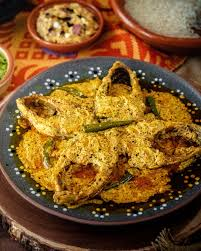

🐟 Shorshe Ilish (Hilsa in Mustard Sauce)

Ingredients
- 4 pieces of Hilsa (Ilish) fish
- 2 tbsp mustard seeds (yellow and black mixed)
- 2 green chilies
- 1/4 tsp turmeric powder
- 2–3 tbsp mustard oil
- Salt to taste
- 1/4 cup water
Instructions
- Soak mustard seeds in water for 15–20 minutes, then grind into a paste with green chilies and salt.
- Rub turmeric and salt on fish pieces and keep aside for 10 minutes.
- Heat mustard oil until it smokes, then cool slightly and fry fish lightly (optional).
- Add mustard paste and a bit of water. Let it boil.
- Gently place fish into the gravy and cook for 6–8 minutes until done.
- Finish with a drizzle of raw mustard oil and a slit green chili.
💡 Tip: Avoid overcooking Hilsa — it becomes too soft and breaks apart easily.